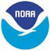

If you don't see a menu below, please click on the above logo.
|
If you don't see a menu below, please click on the above logo. |
Cape Dory Sailboat Owners Association |
|
|
Coast Guard, Safety &
Weather:
|
|||||||||
|
On this page:
|
|

| NOAA Resources: |
|
|
|
| This page was last revised: 13 October 2021 |
Modified by: Catherine Monaghan
|
Home
| Benefits | Events
| Fleets | Chandlery
| Where to Look | CD
Board | CD Info | CD
Registry | Contact Us
|
|
©CDSOA and the
CDSOA logo are the property of the Cape Dory Sailboat Owners Association,
Inc.. Use, reproduction,
copying or redistribution of same without the written permission of
the CDSOA, Inc. is prohibited. All other trademarks or servicemarks
appearing
on the Site are the marks of their respective owners. |
|